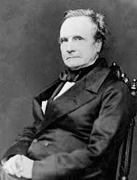

(1791 - 1871)
A tool is usually more simple than a machine; it is generally used with the hand, whilst a machine is frequently moved by animal or steam power.
At each increase of knowledge, as well as on the contrivance of every new tool, human labour becomes abridged.
| Early Life and Education |
|---|
| Charles Babbage was born on December 26, 1791 in England. He was one of four children born to Betsy Plumleigh Teape and Benjamin Babbage. His father was a banker. |
| When he was young, Charles contracted a near-fatal fever. He was sent out of the city to recover. He attended a few different schools but due to his poor health, he ended up at home with a private tutor. He eventually ended up at Holmwood academy in Enfield, Middlesex. This is where his love of mathematics started. |
| From 1810 to 1814, he attended Trinity College in Cambridge and moved to Peterhouse College, Cambridge in 1812, where he was the top mathematician. He graduated in 1814. |
| Jobs |
|---|
| Babbage became an astronomy lecturer at the Royal Institution and in 1816, he was made a Fellow of the Royal Society. |
In 1820, Babbage helped found the Astronomical Society, and won its Gold Medal in 1824, for his invention of an engine for calculating mathematical and astronomical tables. |
| From 1828 to 1839, Babbage was a Lucasian Professor of Mathematics at Cambridge University. |
Mathematician · Mechanical Engineer · Inventor · Philosopher